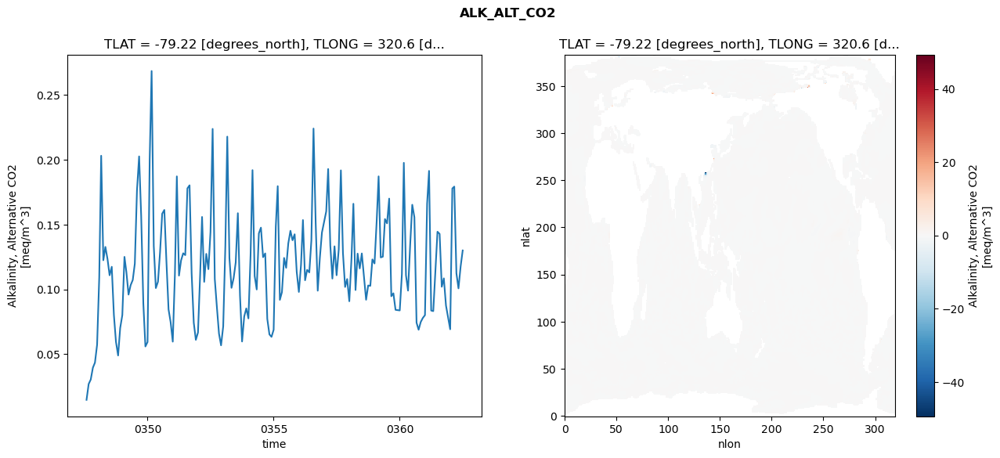
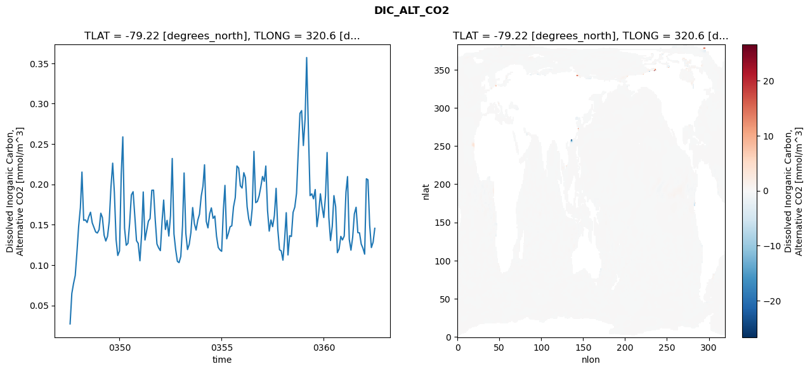
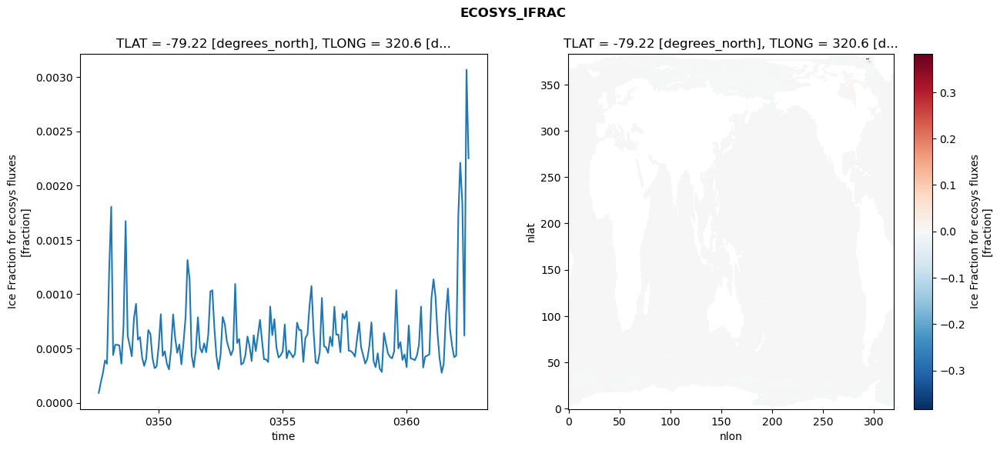
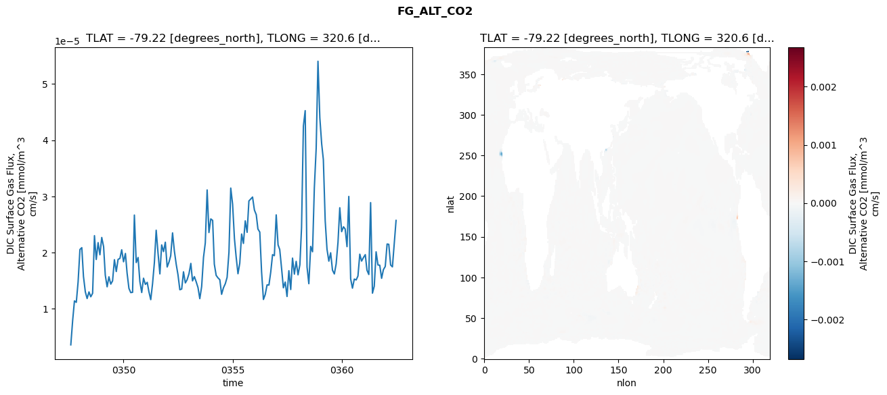

glb-dor_North_Atlantic_basin_037_1999-07-01_00150#
Simulation details#
Case: smyle.cdr-atlas-v0.glb-dor_North_Atlantic_basin_037_1999-07-01_00150.001
Basin: North_Atlantic_basin
Polygon: 37.0
Start date: 1999-07
Show code cell source Hide code cell source
import xarray as xr
import matplotlib.pyplot as plt
Show code cell source Hide code cell source
zarr_store = "/path/to/zarr/store"
# Parameters
zarr_store = "/global/cfs/projectdirs/m4746/Projects/Ocean-CDR-Atlas-v0/data/validation/smyle.cdr-atlas-v0.glb-dor_North_Atlantic_basin_037_1999-07-01_00150.001.validation.zarr"
Show code cell source Hide code cell source
%%time
ds_o = xr.open_zarr(zarr_store).compute()
ds_o
CPU times: user 640 ms, sys: 427 ms, total: 1.07 s
Wall time: 1.29 s
<xarray.Dataset> Size: 2MB
Dimensions: (nlat: 384, nlon: 320, time: 180)
Coordinates:
TLAT float64 8B -79.22
TLONG float64 8B 320.6
ULAT float64 8B -78.95
ULONG float64 8B 321.1
* time (time) object 1kB 0347-08-01 00:00:00 ... 0362-07-01 0...
z_t float32 4B 500.0
Dimensions without coordinates: nlat, nlon
Data variables:
ALK_ALT_CO2_diff (nlat, nlon) float32 492kB nan nan nan ... nan nan nan
ALK_ALT_CO2_rmse (time) float64 1kB 0.01468 0.02691 ... 0.1176 0.13
DIC_ALT_CO2_diff (nlat, nlon) float32 492kB nan nan nan ... nan nan nan
DIC_ALT_CO2_rmse (time) float64 1kB 0.0272 0.0649 ... 0.1284 0.1456
ECOSYS_IFRAC_diff (nlat, nlon) float32 492kB nan nan nan ... nan nan nan
ECOSYS_IFRAC_rmse (time) float64 1kB 9.104e-05 0.0001873 ... 0.002251
FG_ALT_CO2_diff (nlat, nlon) float32 492kB nan nan nan ... nan nan nan
FG_ALT_CO2_rmse (time) float64 1kB 3.576e-06 7.917e-06 ... 2.572e-05xarray.Dataset
- nlat: 384
- nlon: 320
- time: 180
- TLAT()float64-79.22
- long_name :
- array of t-grid latitudes
- units :
- degrees_north
array(-79.22052261)
- TLONG()float64320.6
- long_name :
- array of t-grid longitudes
- units :
- degrees_east
array(320.56250892)
- ULAT()float64-78.95
- long_name :
- array of u-grid latitudes
- units :
- degrees_north
array(-78.95289509)
- ULONG()float64321.1
- long_name :
- array of u-grid longitudes
- units :
- degrees_east
array(321.12500894)
- time(time)object0347-08-01 00:00:00 ... 0362-07-...
- bounds :
- time_bound
- long_name :
- time
array([cftime.DatetimeNoLeap(347, 8, 1, 0, 0, 0, 0, has_year_zero=True), cftime.DatetimeNoLeap(347, 9, 1, 0, 0, 0, 0, has_year_zero=True), cftime.DatetimeNoLeap(347, 10, 1, 0, 0, 0, 0, has_year_zero=True), cftime.DatetimeNoLeap(347, 11, 1, 0, 0, 0, 0, has_year_zero=True), cftime.DatetimeNoLeap(347, 12, 1, 0, 0, 0, 0, has_year_zero=True), cftime.DatetimeNoLeap(348, 1, 1, 0, 0, 0, 0, has_year_zero=True), cftime.DatetimeNoLeap(348, 2, 1, 0, 0, 0, 0, has_year_zero=True), cftime.DatetimeNoLeap(348, 3, 1, 0, 0, 0, 0, has_year_zero=True), cftime.DatetimeNoLeap(348, 4, 1, 0, 0, 0, 0, has_year_zero=True), cftime.DatetimeNoLeap(348, 5, 1, 0, 0, 0, 0, has_year_zero=True), cftime.DatetimeNoLeap(348, 6, 1, 0, 0, 0, 0, has_year_zero=True), cftime.DatetimeNoLeap(348, 7, 1, 0, 0, 0, 0, has_year_zero=True), cftime.DatetimeNoLeap(348, 8, 1, 0, 0, 0, 0, has_year_zero=True), cftime.DatetimeNoLeap(348, 9, 1, 0, 0, 0, 0, has_year_zero=True), cftime.DatetimeNoLeap(348, 10, 1, 0, 0, 0, 0, has_year_zero=True), cftime.DatetimeNoLeap(348, 11, 1, 0, 0, 0, 0, has_year_zero=True), cftime.DatetimeNoLeap(348, 12, 1, 0, 0, 0, 0, has_year_zero=True), cftime.DatetimeNoLeap(349, 1, 1, 0, 0, 0, 0, has_year_zero=True), cftime.DatetimeNoLeap(349, 2, 1, 0, 0, 0, 0, has_year_zero=True), cftime.DatetimeNoLeap(349, 3, 1, 0, 0, 0, 0, has_year_zero=True), cftime.DatetimeNoLeap(349, 4, 1, 0, 0, 0, 0, has_year_zero=True), cftime.DatetimeNoLeap(349, 5, 1, 0, 0, 0, 0, has_year_zero=True), cftime.DatetimeNoLeap(349, 6, 1, 0, 0, 0, 0, has_year_zero=True), cftime.DatetimeNoLeap(349, 7, 1, 0, 0, 0, 0, has_year_zero=True), cftime.DatetimeNoLeap(349, 8, 1, 0, 0, 0, 0, has_year_zero=True), cftime.DatetimeNoLeap(349, 9, 1, 0, 0, 0, 0, has_year_zero=True), cftime.DatetimeNoLeap(349, 10, 1, 0, 0, 0, 0, has_year_zero=True), cftime.DatetimeNoLeap(349, 11, 1, 0, 0, 0, 0, has_year_zero=True), cftime.DatetimeNoLeap(349, 12, 1, 0, 0, 0, 0, has_year_zero=True), cftime.DatetimeNoLeap(350, 1, 1, 0, 0, 0, 0, has_year_zero=True), cftime.DatetimeNoLeap(350, 2, 1, 0, 0, 0, 0, has_year_zero=True), cftime.DatetimeNoLeap(350, 3, 1, 0, 0, 0, 0, has_year_zero=True), cftime.DatetimeNoLeap(350, 4, 1, 0, 0, 0, 0, has_year_zero=True), cftime.DatetimeNoLeap(350, 5, 1, 0, 0, 0, 0, has_year_zero=True), cftime.DatetimeNoLeap(350, 6, 1, 0, 0, 0, 0, has_year_zero=True), cftime.DatetimeNoLeap(350, 7, 1, 0, 0, 0, 0, has_year_zero=True), cftime.DatetimeNoLeap(350, 8, 1, 0, 0, 0, 0, has_year_zero=True), cftime.DatetimeNoLeap(350, 9, 1, 0, 0, 0, 0, has_year_zero=True), cftime.DatetimeNoLeap(350, 10, 1, 0, 0, 0, 0, has_year_zero=True), cftime.DatetimeNoLeap(350, 11, 1, 0, 0, 0, 0, has_year_zero=True), cftime.DatetimeNoLeap(350, 12, 1, 0, 0, 0, 0, has_year_zero=True), cftime.DatetimeNoLeap(351, 1, 1, 0, 0, 0, 0, has_year_zero=True), cftime.DatetimeNoLeap(351, 2, 1, 0, 0, 0, 0, has_year_zero=True), cftime.DatetimeNoLeap(351, 3, 1, 0, 0, 0, 0, has_year_zero=True), cftime.DatetimeNoLeap(351, 4, 1, 0, 0, 0, 0, has_year_zero=True), cftime.DatetimeNoLeap(351, 5, 1, 0, 0, 0, 0, has_year_zero=True), cftime.DatetimeNoLeap(351, 6, 1, 0, 0, 0, 0, has_year_zero=True), cftime.DatetimeNoLeap(351, 7, 1, 0, 0, 0, 0, has_year_zero=True), cftime.DatetimeNoLeap(351, 8, 1, 0, 0, 0, 0, has_year_zero=True), cftime.DatetimeNoLeap(351, 9, 1, 0, 0, 0, 0, has_year_zero=True), cftime.DatetimeNoLeap(351, 10, 1, 0, 0, 0, 0, has_year_zero=True), cftime.DatetimeNoLeap(351, 11, 1, 0, 0, 0, 0, has_year_zero=True), cftime.DatetimeNoLeap(351, 12, 1, 0, 0, 0, 0, has_year_zero=True), cftime.DatetimeNoLeap(352, 1, 1, 0, 0, 0, 0, has_year_zero=True), cftime.DatetimeNoLeap(352, 2, 1, 0, 0, 0, 0, has_year_zero=True), cftime.DatetimeNoLeap(352, 3, 1, 0, 0, 0, 0, has_year_zero=True), cftime.DatetimeNoLeap(352, 4, 1, 0, 0, 0, 0, has_year_zero=True), cftime.DatetimeNoLeap(352, 5, 1, 0, 0, 0, 0, has_year_zero=True), cftime.DatetimeNoLeap(352, 6, 1, 0, 0, 0, 0, has_year_zero=True), cftime.DatetimeNoLeap(352, 7, 1, 0, 0, 0, 0, has_year_zero=True), cftime.DatetimeNoLeap(352, 8, 1, 0, 0, 0, 0, has_year_zero=True), cftime.DatetimeNoLeap(352, 9, 1, 0, 0, 0, 0, has_year_zero=True), cftime.DatetimeNoLeap(352, 10, 1, 0, 0, 0, 0, has_year_zero=True), cftime.DatetimeNoLeap(352, 11, 1, 0, 0, 0, 0, has_year_zero=True), cftime.DatetimeNoLeap(352, 12, 1, 0, 0, 0, 0, has_year_zero=True), cftime.DatetimeNoLeap(353, 1, 1, 0, 0, 0, 0, has_year_zero=True), cftime.DatetimeNoLeap(353, 2, 1, 0, 0, 0, 0, has_year_zero=True), cftime.DatetimeNoLeap(353, 3, 1, 0, 0, 0, 0, has_year_zero=True), cftime.DatetimeNoLeap(353, 4, 1, 0, 0, 0, 0, has_year_zero=True), cftime.DatetimeNoLeap(353, 5, 1, 0, 0, 0, 0, has_year_zero=True), cftime.DatetimeNoLeap(353, 6, 1, 0, 0, 0, 0, has_year_zero=True), cftime.DatetimeNoLeap(353, 7, 1, 0, 0, 0, 0, has_year_zero=True), cftime.DatetimeNoLeap(353, 8, 1, 0, 0, 0, 0, has_year_zero=True), cftime.DatetimeNoLeap(353, 9, 1, 0, 0, 0, 0, has_year_zero=True), cftime.DatetimeNoLeap(353, 10, 1, 0, 0, 0, 0, has_year_zero=True), cftime.DatetimeNoLeap(353, 11, 1, 0, 0, 0, 0, has_year_zero=True), cftime.DatetimeNoLeap(353, 12, 1, 0, 0, 0, 0, has_year_zero=True), cftime.DatetimeNoLeap(354, 1, 1, 0, 0, 0, 0, has_year_zero=True), cftime.DatetimeNoLeap(354, 2, 1, 0, 0, 0, 0, has_year_zero=True), cftime.DatetimeNoLeap(354, 3, 1, 0, 0, 0, 0, has_year_zero=True), cftime.DatetimeNoLeap(354, 4, 1, 0, 0, 0, 0, has_year_zero=True), cftime.DatetimeNoLeap(354, 5, 1, 0, 0, 0, 0, has_year_zero=True), cftime.DatetimeNoLeap(354, 6, 1, 0, 0, 0, 0, has_year_zero=True), cftime.DatetimeNoLeap(354, 7, 1, 0, 0, 0, 0, has_year_zero=True), cftime.DatetimeNoLeap(354, 8, 1, 0, 0, 0, 0, has_year_zero=True), cftime.DatetimeNoLeap(354, 9, 1, 0, 0, 0, 0, has_year_zero=True), cftime.DatetimeNoLeap(354, 10, 1, 0, 0, 0, 0, has_year_zero=True), cftime.DatetimeNoLeap(354, 11, 1, 0, 0, 0, 0, has_year_zero=True), cftime.DatetimeNoLeap(354, 12, 1, 0, 0, 0, 0, has_year_zero=True), cftime.DatetimeNoLeap(355, 1, 1, 0, 0, 0, 0, has_year_zero=True), cftime.DatetimeNoLeap(355, 2, 1, 0, 0, 0, 0, has_year_zero=True), cftime.DatetimeNoLeap(355, 3, 1, 0, 0, 0, 0, has_year_zero=True), cftime.DatetimeNoLeap(355, 4, 1, 0, 0, 0, 0, has_year_zero=True), cftime.DatetimeNoLeap(355, 5, 1, 0, 0, 0, 0, has_year_zero=True), cftime.DatetimeNoLeap(355, 6, 1, 0, 0, 0, 0, has_year_zero=True), cftime.DatetimeNoLeap(355, 7, 1, 0, 0, 0, 0, has_year_zero=True), cftime.DatetimeNoLeap(355, 8, 1, 0, 0, 0, 0, has_year_zero=True), cftime.DatetimeNoLeap(355, 9, 1, 0, 0, 0, 0, has_year_zero=True), cftime.DatetimeNoLeap(355, 10, 1, 0, 0, 0, 0, has_year_zero=True), cftime.DatetimeNoLeap(355, 11, 1, 0, 0, 0, 0, has_year_zero=True), cftime.DatetimeNoLeap(355, 12, 1, 0, 0, 0, 0, has_year_zero=True), cftime.DatetimeNoLeap(356, 1, 1, 0, 0, 0, 0, has_year_zero=True), cftime.DatetimeNoLeap(356, 2, 1, 0, 0, 0, 0, has_year_zero=True), cftime.DatetimeNoLeap(356, 3, 1, 0, 0, 0, 0, has_year_zero=True), cftime.DatetimeNoLeap(356, 4, 1, 0, 0, 0, 0, has_year_zero=True), cftime.DatetimeNoLeap(356, 5, 1, 0, 0, 0, 0, has_year_zero=True), cftime.DatetimeNoLeap(356, 6, 1, 0, 0, 0, 0, has_year_zero=True), cftime.DatetimeNoLeap(356, 7, 1, 0, 0, 0, 0, has_year_zero=True), cftime.DatetimeNoLeap(356, 8, 1, 0, 0, 0, 0, has_year_zero=True), cftime.DatetimeNoLeap(356, 9, 1, 0, 0, 0, 0, has_year_zero=True), cftime.DatetimeNoLeap(356, 10, 1, 0, 0, 0, 0, has_year_zero=True), cftime.DatetimeNoLeap(356, 11, 1, 0, 0, 0, 0, has_year_zero=True), cftime.DatetimeNoLeap(356, 12, 1, 0, 0, 0, 0, has_year_zero=True), cftime.DatetimeNoLeap(357, 1, 1, 0, 0, 0, 0, has_year_zero=True), cftime.DatetimeNoLeap(357, 2, 1, 0, 0, 0, 0, has_year_zero=True), cftime.DatetimeNoLeap(357, 3, 1, 0, 0, 0, 0, has_year_zero=True), cftime.DatetimeNoLeap(357, 4, 1, 0, 0, 0, 0, has_year_zero=True), cftime.DatetimeNoLeap(357, 5, 1, 0, 0, 0, 0, has_year_zero=True), cftime.DatetimeNoLeap(357, 6, 1, 0, 0, 0, 0, has_year_zero=True), cftime.DatetimeNoLeap(357, 7, 1, 0, 0, 0, 0, has_year_zero=True), cftime.DatetimeNoLeap(357, 8, 1, 0, 0, 0, 0, has_year_zero=True), cftime.DatetimeNoLeap(357, 9, 1, 0, 0, 0, 0, has_year_zero=True), cftime.DatetimeNoLeap(357, 10, 1, 0, 0, 0, 0, has_year_zero=True), cftime.DatetimeNoLeap(357, 11, 1, 0, 0, 0, 0, has_year_zero=True), cftime.DatetimeNoLeap(357, 12, 1, 0, 0, 0, 0, has_year_zero=True), cftime.DatetimeNoLeap(358, 1, 1, 0, 0, 0, 0, has_year_zero=True), cftime.DatetimeNoLeap(358, 2, 1, 0, 0, 0, 0, has_year_zero=True), cftime.DatetimeNoLeap(358, 3, 1, 0, 0, 0, 0, has_year_zero=True), cftime.DatetimeNoLeap(358, 4, 1, 0, 0, 0, 0, has_year_zero=True), cftime.DatetimeNoLeap(358, 5, 1, 0, 0, 0, 0, has_year_zero=True), cftime.DatetimeNoLeap(358, 6, 1, 0, 0, 0, 0, has_year_zero=True), cftime.DatetimeNoLeap(358, 7, 1, 0, 0, 0, 0, has_year_zero=True), cftime.DatetimeNoLeap(358, 8, 1, 0, 0, 0, 0, has_year_zero=True), cftime.DatetimeNoLeap(358, 9, 1, 0, 0, 0, 0, has_year_zero=True), cftime.DatetimeNoLeap(358, 10, 1, 0, 0, 0, 0, has_year_zero=True), cftime.DatetimeNoLeap(358, 11, 1, 0, 0, 0, 0, has_year_zero=True), cftime.DatetimeNoLeap(358, 12, 1, 0, 0, 0, 0, has_year_zero=True), cftime.DatetimeNoLeap(359, 1, 1, 0, 0, 0, 0, has_year_zero=True), cftime.DatetimeNoLeap(359, 2, 1, 0, 0, 0, 0, has_year_zero=True), cftime.DatetimeNoLeap(359, 3, 1, 0, 0, 0, 0, has_year_zero=True), cftime.DatetimeNoLeap(359, 4, 1, 0, 0, 0, 0, has_year_zero=True), cftime.DatetimeNoLeap(359, 5, 1, 0, 0, 0, 0, has_year_zero=True), cftime.DatetimeNoLeap(359, 6, 1, 0, 0, 0, 0, has_year_zero=True), cftime.DatetimeNoLeap(359, 7, 1, 0, 0, 0, 0, has_year_zero=True), cftime.DatetimeNoLeap(359, 8, 1, 0, 0, 0, 0, has_year_zero=True), cftime.DatetimeNoLeap(359, 9, 1, 0, 0, 0, 0, has_year_zero=True), cftime.DatetimeNoLeap(359, 10, 1, 0, 0, 0, 0, has_year_zero=True), cftime.DatetimeNoLeap(359, 11, 1, 0, 0, 0, 0, has_year_zero=True), cftime.DatetimeNoLeap(359, 12, 1, 0, 0, 0, 0, has_year_zero=True), cftime.DatetimeNoLeap(360, 1, 1, 0, 0, 0, 0, has_year_zero=True), cftime.DatetimeNoLeap(360, 2, 1, 0, 0, 0, 0, has_year_zero=True), cftime.DatetimeNoLeap(360, 3, 1, 0, 0, 0, 0, has_year_zero=True), cftime.DatetimeNoLeap(360, 4, 1, 0, 0, 0, 0, has_year_zero=True), cftime.DatetimeNoLeap(360, 5, 1, 0, 0, 0, 0, has_year_zero=True), cftime.DatetimeNoLeap(360, 6, 1, 0, 0, 0, 0, has_year_zero=True), cftime.DatetimeNoLeap(360, 7, 1, 0, 0, 0, 0, has_year_zero=True), cftime.DatetimeNoLeap(360, 8, 1, 0, 0, 0, 0, has_year_zero=True), cftime.DatetimeNoLeap(360, 9, 1, 0, 0, 0, 0, has_year_zero=True), cftime.DatetimeNoLeap(360, 10, 1, 0, 0, 0, 0, has_year_zero=True), cftime.DatetimeNoLeap(360, 11, 1, 0, 0, 0, 0, has_year_zero=True), cftime.DatetimeNoLeap(360, 12, 1, 0, 0, 0, 0, has_year_zero=True), cftime.DatetimeNoLeap(361, 1, 1, 0, 0, 0, 0, has_year_zero=True), cftime.DatetimeNoLeap(361, 2, 1, 0, 0, 0, 0, has_year_zero=True), cftime.DatetimeNoLeap(361, 3, 1, 0, 0, 0, 0, has_year_zero=True), cftime.DatetimeNoLeap(361, 4, 1, 0, 0, 0, 0, has_year_zero=True), cftime.DatetimeNoLeap(361, 5, 1, 0, 0, 0, 0, has_year_zero=True), cftime.DatetimeNoLeap(361, 6, 1, 0, 0, 0, 0, has_year_zero=True), cftime.DatetimeNoLeap(361, 7, 1, 0, 0, 0, 0, has_year_zero=True), cftime.DatetimeNoLeap(361, 8, 1, 0, 0, 0, 0, has_year_zero=True), cftime.DatetimeNoLeap(361, 9, 1, 0, 0, 0, 0, has_year_zero=True), cftime.DatetimeNoLeap(361, 10, 1, 0, 0, 0, 0, has_year_zero=True), cftime.DatetimeNoLeap(361, 11, 1, 0, 0, 0, 0, has_year_zero=True), cftime.DatetimeNoLeap(361, 12, 1, 0, 0, 0, 0, has_year_zero=True), cftime.DatetimeNoLeap(362, 1, 1, 0, 0, 0, 0, has_year_zero=True), cftime.DatetimeNoLeap(362, 2, 1, 0, 0, 0, 0, has_year_zero=True), cftime.DatetimeNoLeap(362, 3, 1, 0, 0, 0, 0, has_year_zero=True), cftime.DatetimeNoLeap(362, 4, 1, 0, 0, 0, 0, has_year_zero=True), cftime.DatetimeNoLeap(362, 5, 1, 0, 0, 0, 0, has_year_zero=True), cftime.DatetimeNoLeap(362, 6, 1, 0, 0, 0, 0, has_year_zero=True), cftime.DatetimeNoLeap(362, 7, 1, 0, 0, 0, 0, has_year_zero=True)], dtype=object) - z_t()float32500.0
- long_name :
- depth from surface to midpoint of layer
- positive :
- down
- units :
- centimeters
- valid_max :
- 537500.0
- valid_min :
- 500.0
array(500., dtype=float32)
- ALK_ALT_CO2_diff(nlat, nlon)float32nan nan nan nan ... nan nan nan nan
- cell_methods :
- time: mean
- grid_loc :
- 3111
- long_name :
- Alkalinity, Alternative CO2
- units :
- meq/m^3
array([[ nan, nan, nan, ..., nan, nan, nan], [ nan, nan, nan, ..., nan, nan, nan], [ 0.00878906, -0.00097656, 0.01245117, ..., nan, nan, nan], ..., [ nan, nan, nan, ..., nan, nan, nan], [ nan, nan, nan, ..., nan, nan, nan], [ nan, nan, nan, ..., nan, nan, nan]], dtype=float32) - ALK_ALT_CO2_rmse(time)float640.01468 0.02691 ... 0.1176 0.13
- cell_methods :
- time: mean
- grid_loc :
- 3111
- long_name :
- Alkalinity, Alternative CO2
- units :
- meq/m^3
array([0.01468142, 0.02691109, 0.03034984, 0.03949322, 0.043439 , 0.05725364, 0.10922644, 0.20306779, 0.12243097, 0.13270666, 0.12325052, 0.11081241, 0.1173673 , 0.08018109, 0.05944819, 0.04892645, 0.07007698, 0.08010565, 0.12502734, 0.11324432, 0.0959245 , 0.10312681, 0.1072008 , 0.11983144, 0.17627875, 0.20256761, 0.15655027, 0.08909343, 0.05587989, 0.05931553, 0.20042055, 0.26845569, 0.13348696, 0.10094648, 0.10585891, 0.12858416, 0.15832638, 0.1612512 , 0.1218655 , 0.08449276, 0.0746462 , 0.05960532, 0.11148163, 0.1871523 , 0.11058173, 0.12226227, 0.12778943, 0.12637781, 0.17787549, 0.18026482, 0.11241607, 0.07418869, 0.06098509, 0.06665192, 0.11087539, 0.15584112, 0.10576279, 0.12734384, 0.11555409, 0.14417564, 0.22379354, 0.10799252, 0.08663917, 0.06576647, 0.05676039, 0.07140121, 0.13348355, 0.21782582, 0.12400826, 0.10113197, 0.10867582, 0.12069277, 0.15873017, 0.09517671, 0.05971296, 0.07898926, 0.08526067, 0.07753144, 0.12628845, 0.19196811, 0.11030356, 0.09986209, 0.14316014, 0.14759486, 0.12479499, 0.12769653, 0.07713889, 0.06518144, 0.06329576, 0.06877315, 0.14838102, 0.17960059, 0.09188579, 0.09779288, 0.12419705, 0.11659096, 0.13548235, 0.14516606, 0.13785912, 0.14246688, 0.11345014, 0.09796168, 0.11878182, 0.15344377, 0.10697681, 0.11502002, 0.11302991, 0.13771186, 0.22405461, 0.15180548, 0.09892848, 0.12449308, 0.14383919, 0.15201992, 0.16013715, 0.19282361, 0.13379094, 0.10828351, 0.13316431, 0.11086298, 0.13065411, 0.19178891, 0.1280284 , 0.10181641, 0.10793484, 0.09077626, 0.12320304, 0.16600258, 0.09943632, 0.12753908, 0.11614251, 0.12766689, 0.10954288, 0.09194293, 0.10295502, 0.10265501, 0.12307267, 0.11993717, 0.1525137 , 0.18715853, 0.12460135, 0.12514639, 0.15420462, 0.15090953, 0.16999423, 0.09465364, 0.09692025, 0.08415102, 0.08390015, 0.08369377, 0.11170389, 0.19760674, 0.11084015, 0.09899142, 0.13456508, 0.16525075, 0.15560621, 0.0742772 , 0.06879003, 0.07479319, 0.07789139, 0.08004599, 0.16610834, 0.19137553, 0.08360297, 0.08316366, 0.11491061, 0.14442132, 0.14273931, 0.10197935, 0.10844971, 0.08747994, 0.07838167, 0.06916308, 0.17780225, 0.17925826, 0.11236026, 0.1007293 , 0.11763414, 0.12998364]) - DIC_ALT_CO2_diff(nlat, nlon)float32nan nan nan nan ... nan nan nan nan
- cell_methods :
- time: mean
- grid_loc :
- 3111
- long_name :
- Dissolved Inorganic Carbon, Alternative CO2
- units :
- mmol/m^3
array([[ nan, nan, nan, ..., nan, nan, nan], [ nan, nan, nan, ..., nan, nan, nan], [-0.00195312, -0.00512695, 0.00048828, ..., nan, nan, nan], ..., [ nan, nan, nan, ..., nan, nan, nan], [ nan, nan, nan, ..., nan, nan, nan], [ nan, nan, nan, ..., nan, nan, nan]], dtype=float32) - DIC_ALT_CO2_rmse(time)float640.0272 0.0649 ... 0.1284 0.1456
- cell_methods :
- time: mean
- grid_loc :
- 3111
- long_name :
- Dissolved Inorganic Carbon, Alternative CO2
- units :
- mmol/m^3
array([0.02719636, 0.06489569, 0.07698565, 0.08718309, 0.11558978, 0.14794874, 0.17110365, 0.21523011, 0.15542902, 0.15605809, 0.15273344, 0.15999196, 0.16551198, 0.15231903, 0.14676397, 0.14108989, 0.13972143, 0.14381809, 0.16427746, 0.1589398 , 0.13704895, 0.12985137, 0.13566124, 0.15395418, 0.19622708, 0.22626842, 0.19004949, 0.13169867, 0.11193481, 0.11751539, 0.21236311, 0.25881875, 0.14595143, 0.12457087, 0.12701201, 0.15204237, 0.18696342, 0.19091024, 0.16130248, 0.13016938, 0.12691615, 0.10539847, 0.13931293, 0.19058057, 0.13107261, 0.14249091, 0.15443427, 0.15763968, 0.19273484, 0.19286802, 0.15633411, 0.12617601, 0.12132911, 0.11792163, 0.15498956, 0.18056927, 0.14413642, 0.15541555, 0.13597836, 0.16121828, 0.23205168, 0.13861508, 0.11940857, 0.10467798, 0.10310782, 0.11078769, 0.14859388, 0.21412347, 0.13940068, 0.11924824, 0.12590231, 0.14056987, 0.17127231, 0.15122444, 0.14339114, 0.15579609, 0.16303098, 0.18535921, 0.19782892, 0.22422447, 0.154265 , 0.14608566, 0.16344355, 0.17087234, 0.15789204, 0.16079701, 0.13603391, 0.1218842 , 0.1188946 , 0.11709244, 0.16842795, 0.19874386, 0.13258909, 0.13927649, 0.14750446, 0.14863923, 0.17208203, 0.18352431, 0.22275339, 0.22019207, 0.19819271, 0.19545861, 0.21446649, 0.20847212, 0.17229848, 0.15676284, 0.14894448, 0.16998835, 0.24085564, 0.17734229, 0.17877944, 0.18567852, 0.19669592, 0.20975471, 0.20375457, 0.22271066, 0.16757341, 0.14210282, 0.15593113, 0.14759833, 0.16128293, 0.195091 , 0.14419125, 0.11899079, 0.11768536, 0.10611926, 0.13304063, 0.16491344, 0.1125707 , 0.13636901, 0.13549204, 0.16526298, 0.17188739, 0.18901695, 0.23996276, 0.28794174, 0.29136901, 0.24810958, 0.28128523, 0.35708192, 0.26681086, 0.18602737, 0.18829232, 0.18211034, 0.19358017, 0.14763683, 0.16383005, 0.18831643, 0.17220722, 0.15895114, 0.18638254, 0.2394632 , 0.15909742, 0.13043754, 0.1480155 , 0.18604312, 0.17228768, 0.11538195, 0.11992557, 0.13555577, 0.13117844, 0.13601828, 0.19045174, 0.20962643, 0.13193941, 0.11852009, 0.13454675, 0.1633593 , 0.17163788, 0.14025808, 0.13992553, 0.1260187 , 0.12101901, 0.11360693, 0.20692565, 0.2056815 , 0.14921116, 0.12171781, 0.12836228, 0.14559063]) - ECOSYS_IFRAC_diff(nlat, nlon)float32nan nan nan nan ... nan nan nan nan
- cell_methods :
- time: mean
- grid_loc :
- 2110
- long_name :
- Ice Fraction for ecosys fluxes
- units :
- fraction
array([[ nan, nan, nan, ..., nan, nan, nan], [ nan, nan, nan, ..., nan, nan, nan], [-1.8477440e-06, 2.3841858e-06, 1.9192696e-05, ..., nan, nan, nan], ..., [ nan, nan, nan, ..., nan, nan, nan], [ nan, nan, nan, ..., nan, nan, nan], [ nan, nan, nan, ..., nan, nan, nan]], dtype=float32) - ECOSYS_IFRAC_rmse(time)float649.104e-05 0.0001873 ... 0.002251
- cell_methods :
- time: mean
- grid_loc :
- 2110
- long_name :
- Ice Fraction for ecosys fluxes
- units :
- fraction
array([9.10447171e-05, 1.87303992e-04, 2.71181352e-04, 3.89613879e-04, 3.58414574e-04, 1.20474497e-03, 1.80460354e-03, 4.39119176e-04, 5.33657161e-04, 5.33773659e-04, 5.26605765e-04, 3.60137538e-04, 7.10646441e-04, 1.67257711e-03, 6.15669354e-04, 5.26923424e-04, 4.28156382e-04, 7.74002599e-04, 9.10509817e-04, 5.80065172e-04, 6.04276432e-04, 4.19366244e-04, 3.38678240e-04, 4.06425818e-04, 6.69284283e-04, 6.32872561e-04, 4.14674865e-04, 3.18911984e-04, 3.34416641e-04, 5.21947620e-04, 8.14945141e-04, 4.30678570e-04, 4.74607897e-04, 3.60060720e-04, 3.07210248e-04, 4.87181236e-04, 8.13768254e-04, 5.91723162e-04, 4.59588323e-04, 5.36816497e-04, 3.53260985e-04, 5.52948767e-04, 7.92905269e-04, 1.31394444e-03, 1.13183205e-03, 4.36603396e-04, 3.27263570e-04, 4.82423619e-04, 7.86167524e-04, 5.03821133e-04, 4.62443053e-04, 5.46612584e-04, 4.64658652e-04, 6.30651429e-04, 1.02405982e-03, 1.03588744e-03, 6.82887732e-04, 4.29063284e-04, 3.09598370e-04, 4.43636410e-04, 7.89915395e-04, 7.23955415e-04, 5.67497237e-04, 4.98782995e-04, 4.37219871e-04, 4.87492718e-04, 1.09319747e-03, 5.50565264e-04, 5.87617415e-04, 3.51905511e-04, 3.67382686e-04, 4.38434536e-04, 6.09223761e-04, 5.18861133e-04, 3.84710978e-04, 6.21592968e-04, 4.75737756e-04, 6.17879581e-04, 7.63033474e-04, 5.84444988e-04, ... 5.96280464e-04, 6.28637851e-04, 8.97439292e-04, 1.07398451e-03, 6.56864000e-04, 3.74649217e-04, 3.61839841e-04, 4.66193224e-04, 9.64955875e-04, 5.22421188e-04, 5.08821086e-04, 4.59293636e-04, 6.07278675e-04, 5.21202614e-04, 8.83652514e-04, 6.25998293e-04, 6.27881223e-04, 4.65236666e-04, 8.18714799e-04, 7.71713877e-04, 8.41479799e-04, 4.79556981e-04, 4.76284672e-04, 4.57199753e-04, 4.24379507e-04, 5.86742723e-04, 7.40338292e-04, 5.10645868e-04, 4.37366887e-04, 3.60066223e-04, 4.03773713e-04, 5.21942172e-04, 7.39854228e-04, 3.85117613e-04, 3.27124064e-04, 4.55451354e-04, 3.13456409e-04, 2.84101379e-04, 6.41512363e-04, 5.48727716e-04, 4.54603965e-04, 4.22158121e-04, 4.08887945e-04, 4.72980153e-04, 1.03758458e-03, 4.99663941e-04, 5.57879455e-04, 3.94026924e-04, 4.45519523e-04, 3.28404004e-04, 7.10992579e-04, 4.08545681e-04, 4.03070925e-04, 3.90843746e-04, 4.34635016e-04, 5.32674766e-04, 8.84980258e-04, 3.24219187e-04, 4.24214294e-04, 4.34036984e-04, 4.46441089e-04, 9.62581316e-04, 1.13593450e-03, 9.80872171e-04, 6.35560301e-04, 4.07855722e-04, 2.76337637e-04, 3.59745693e-04, 8.07704810e-04, 1.05073981e-03, 6.79490416e-04, 5.24126591e-04, 4.19708817e-04, 4.34646290e-04, 1.72468918e-03, 2.20908028e-03, 1.83234288e-03, 6.18583471e-04, 3.06552293e-03, 2.25074104e-03]) - FG_ALT_CO2_diff(nlat, nlon)float32nan nan nan nan ... nan nan nan nan
- cell_methods :
- time: mean
- grid_loc :
- 2110
- long_name :
- DIC Surface Gas Flux, Alternative CO2
- units :
- mmol/m^3 cm/s
array([[ nan, nan, nan, ..., nan, nan, nan], [ nan, nan, nan, ..., nan, nan, nan], [7.4645641e-09, 2.1720780e-08, 2.5180817e-08, ..., nan, nan, nan], ..., [ nan, nan, nan, ..., nan, nan, nan], [ nan, nan, nan, ..., nan, nan, nan], [ nan, nan, nan, ..., nan, nan, nan]], dtype=float32) - FG_ALT_CO2_rmse(time)float643.576e-06 7.917e-06 ... 2.572e-05
- cell_methods :
- time: mean
- grid_loc :
- 2110
- long_name :
- DIC Surface Gas Flux, Alternative CO2
- units :
- mmol/m^3 cm/s
array([3.57647781e-06, 7.91654250e-06, 1.14006339e-05, 1.11491612e-05, 1.47671565e-05, 2.05525346e-05, 2.08760130e-05, 1.57474055e-05, 1.30152184e-05, 1.18222232e-05, 1.30013766e-05, 1.21327483e-05, 1.27577044e-05, 2.30105084e-05, 1.87708012e-05, 2.17691782e-05, 1.96123885e-05, 2.26869912e-05, 2.10424433e-05, 1.59907960e-05, 1.39104399e-05, 1.56892326e-05, 1.43861203e-05, 1.49601823e-05, 1.87310745e-05, 1.66253011e-05, 1.87887788e-05, 1.89647503e-05, 2.04984334e-05, 1.83598280e-05, 1.98402826e-05, 1.63501712e-05, 1.36192984e-05, 1.28768144e-05, 1.29231215e-05, 2.66771229e-05, 1.82220290e-05, 1.91292886e-05, 1.48411144e-05, 1.28930533e-05, 1.54397317e-05, 1.43361746e-05, 1.47040904e-05, 1.30453735e-05, 1.16203538e-05, 1.44376408e-05, 1.82172056e-05, 2.39744510e-05, 1.99084932e-05, 1.62039613e-05, 2.13638438e-05, 2.01744485e-05, 2.18435066e-05, 1.74317223e-05, 1.83317306e-05, 1.94326631e-05, 2.35011939e-05, 2.03189412e-05, 1.79293549e-05, 1.60457350e-05, 1.33844651e-05, 1.35130652e-05, 1.65778063e-05, 1.46004144e-05, 1.51758544e-05, 1.62292374e-05, 1.80717758e-05, 1.49633681e-05, 1.57213081e-05, 1.48163698e-05, 1.37693167e-05, 1.18021642e-05, 1.39400380e-05, 1.91429705e-05, 2.17199691e-05, 3.11479020e-05, 2.35716232e-05, 2.59921220e-05, 2.57321375e-05, 1.79458781e-05, ... 2.98828706e-05, 2.75748128e-05, 2.67424246e-05, 2.41913152e-05, 2.36487722e-05, 1.65910688e-05, 1.16520936e-05, 1.25258231e-05, 1.42523217e-05, 1.42150730e-05, 1.65056204e-05, 1.96314640e-05, 1.94567702e-05, 2.67094486e-05, 2.13693241e-05, 2.05382872e-05, 1.71746718e-05, 1.37303803e-05, 1.47557658e-05, 1.21853280e-05, 1.67739405e-05, 1.34230747e-05, 1.90150288e-05, 1.61658893e-05, 1.84348589e-05, 1.60441512e-05, 1.78178286e-05, 2.44457577e-05, 4.25316365e-05, 4.52628368e-05, 1.74302641e-05, 1.44618909e-05, 2.11002213e-05, 2.01439814e-05, 3.14867880e-05, 3.85662696e-05, 5.40548142e-05, 4.39979112e-05, 3.93364423e-05, 3.65445649e-05, 2.56421286e-05, 2.06052849e-05, 1.84718370e-05, 1.99631652e-05, 1.68607222e-05, 1.61976436e-05, 1.79681653e-05, 2.18171575e-05, 2.79820836e-05, 2.37240198e-05, 2.45871813e-05, 2.41997963e-05, 2.10566296e-05, 2.99917134e-05, 1.53124005e-05, 1.36634590e-05, 1.52855944e-05, 1.51257476e-05, 1.58297420e-05, 1.97111472e-05, 1.84846668e-05, 1.91152949e-05, 1.96335820e-05, 1.68623231e-05, 1.60954088e-05, 2.88913057e-05, 1.27763885e-05, 1.40105996e-05, 2.01345843e-05, 1.77899929e-05, 1.77512911e-05, 1.54177314e-05, 1.69589040e-05, 1.75266498e-05, 2.15218779e-05, 2.14755596e-05, 1.77861592e-05, 1.74554278e-05, 2.16591015e-05, 2.57241834e-05])
- timePandasIndex
PandasIndex(CFTimeIndex([0347-08-01 00:00:00, 0347-09-01 00:00:00, 0347-10-01 00:00:00, 0347-11-01 00:00:00, 0347-12-01 00:00:00, 0348-01-01 00:00:00, 0348-02-01 00:00:00, 0348-03-01 00:00:00, 0348-04-01 00:00:00, 0348-05-01 00:00:00, ... 0361-10-01 00:00:00, 0361-11-01 00:00:00, 0361-12-01 00:00:00, 0362-01-01 00:00:00, 0362-02-01 00:00:00, 0362-03-01 00:00:00, 0362-04-01 00:00:00, 0362-05-01 00:00:00, 0362-06-01 00:00:00, 0362-07-01 00:00:00], dtype='object', length=180, calendar='noleap', freq='MS'))
Show code cell source Hide code cell source
variables = [v[:-5] for v in ds_o.variables if "_rmse" in v]
Show code cell source Hide code cell source
plt.rcParams.update({'figure.max_open_warning': 0})
for v in variables:
fig, axs = plt.subplots(1, 2, figsize=(15, 6))
ds_o[f"{v}_rmse"].plot(ax=axs[0])
ds_o[f"{v}_diff"].plot(ax=axs[1])
plt.suptitle(v, fontweight="bold")



